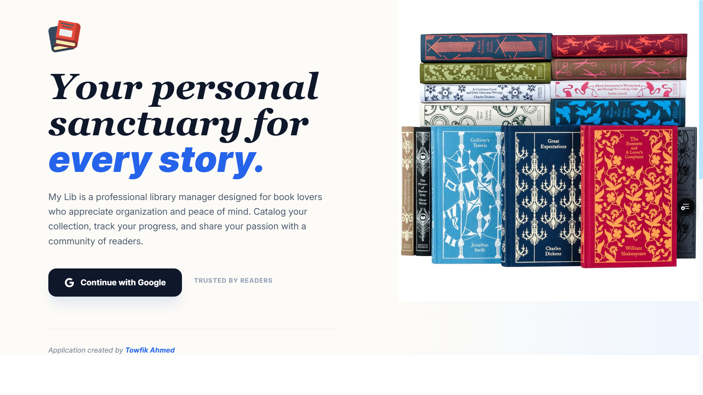
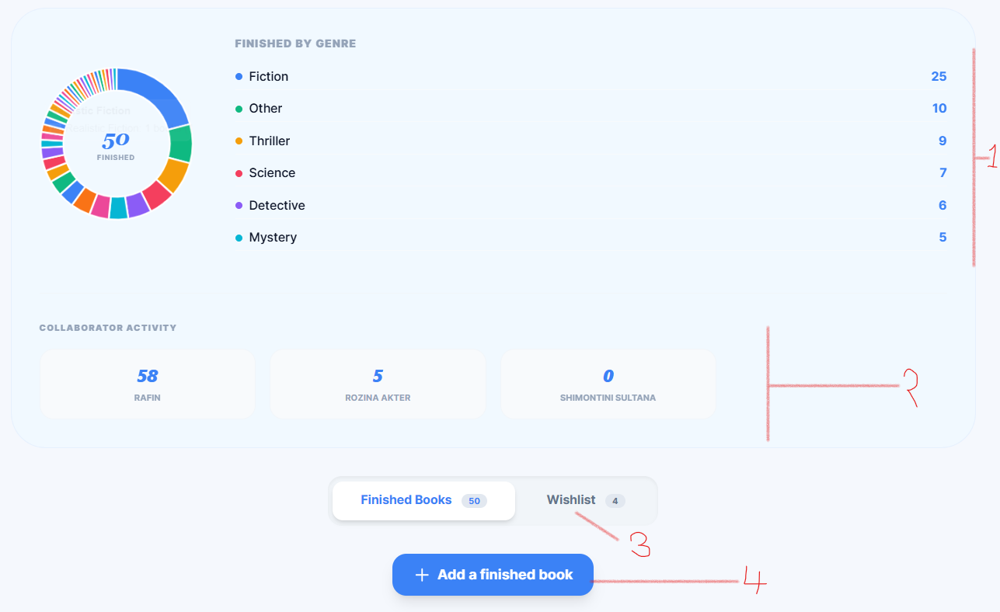
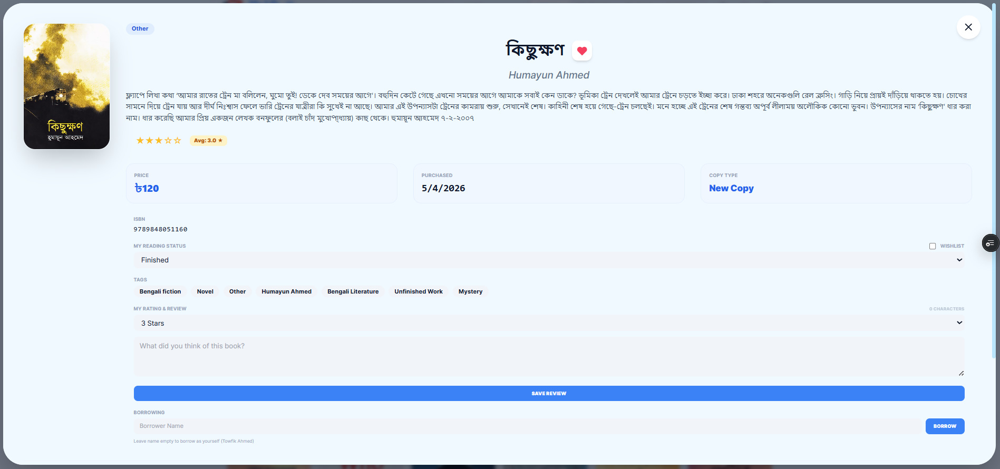
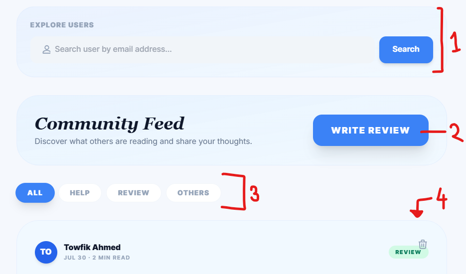
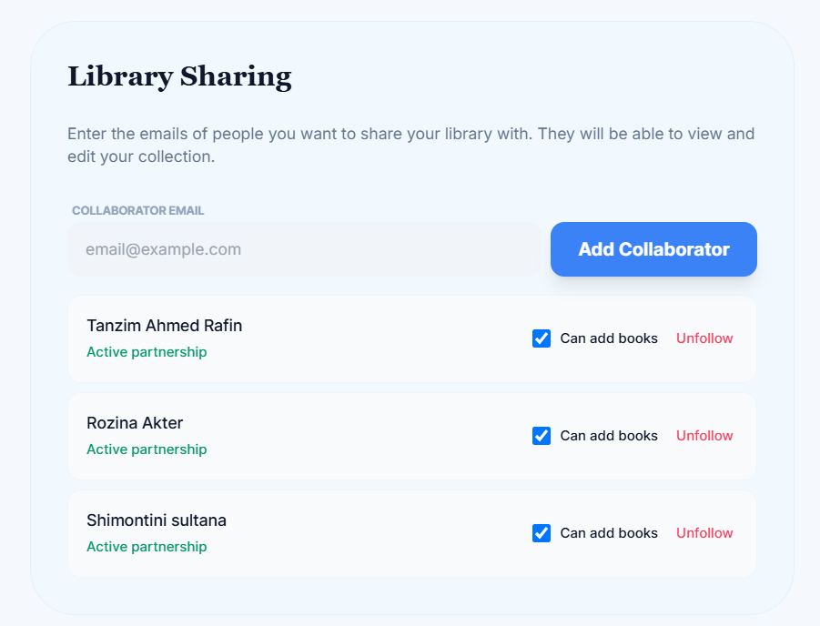

Your library.
Your thoughts.
Your community.
MyLib brings your personal collection, thoughtful reviews, reading insights, and fellow readers together in one place. This guide will walk you through everything you need to know.
Quick Navigation
Explore the guide
Create your MyLib account
Getting started with MyLib is simple. Sign in directly with your Google account and MyLib will automatically determine whether you already have an account.
MyLib currently uses Google authentication through Firebase. Your Google sign-in identity cannot currently be changed from within MyLib. Account deletion is not currently available in this version.

Your reading history at a glance
The My Library tab is where you keep track of the books you have finished and manage your personal reading history.
Your statistics
See an overview of your finished books and
reading activity.
Collaborator activity
See how many books your collaborators have
finished.
Wishlist
Keep track of books you want to read.
Add finished book
Add a book you have already finished, whether
it came from your own collection or another
source.

Build and organize your collection
Your personal library is the heart of MyLib. Add books, organize them and keep useful information about your collection in one place.

Share ideas. Discover readers.
Explore is where the social side of MyLib comes alive. Discover other readers, explore their libraries and share your own thoughts about books.
Explore other libraries
Search for another user's library using their
email address.
Write a post
Use the "Write Review" button to create a post
and select its category.
Choose a category
Posts can be categorized as Review, Help or
Others.
Interact
Like and comment on posts from other readers.

Read together
MyLib lets you connect your library experience with people you trust. Collaboration can make it easier to share reading activity and discover what others are reading.
Tip: Only collaborate with people you trust. Your library is personal, and sharing should always be intentional.

Understand your library
Your library is more than a list of books. Insights helps you see patterns in your collection and understand your reading habits.
Reading Composition
Visualize the composition of your collection and see how different genres and reading categories contribute to your library.
Rating Distribution
Understand how you rate the books you read and discover patterns in your reading preferences.
Collection Value
Keep track of the financial side of your collection, including its total and average value.
Your library, wherever you are
MyLib is designed as a Progressive Web App. You can install it on supported devices and continue using important parts of your library even when your connection is unavailable.
Installable
Add MyLib to your device for an app-like experience.
Offline support
Continue working with available local data
when you are offline.
Cloud synchronization
Changes can synchronize with Firebase when
connectivity is restored.
Offline → Work → Sync
Your library stays connected to your devices through MyLib's synchronization system.
Frequently Asked Questions
Quick answers to common questions about MyLib.